Schluss mit privaten KI-Accounts und wildem Abo-Chaos: ToolDash-OS bündelt alle KI-Zugänge eures Teams in einer Plattform. Spezialisierte Agents erledigen Aufgaben autonom, Budgets bleiben im Rahmen und euer Wissen bleibt im Haus. Cloud-Dashboard für die Steuerung, Ausführung wahlweise auch auf eurer eigenen Hardware.
Von der Geschäftsführung bis zum Entwickler: jede Rolle bekommt die Sicht und die Werkzeuge, die sie wirklich braucht.
Mitarbeiter nutzen KI längst, aber unkoordiniert, unkontrolliert und oft mit privaten Accounts. Das kostet Geld, Wissen und im Zweifel die Compliance.
Kein Konzeptpapier: Die Plattform läuft produktiv im Eigenbetrieb. Multi-User, isolierte Umgebungen, zentrales KI-Gateway, Live-Monitoring.
KI-Anbieter liefern Chat ohne Kontrolle. Automatisierungs-Tools liefern Kontrolle ohne KI-Governance. ToolDash-OS besetzt die Lücke dazwischen: hybrid, mit Cloud-Komfort und Datenhoheit.
Jedes Team arbeitet in einer vollständig isolierten Umgebung mit eigenem Budget: kein ungewollter Datenzugriff, keine gegenseitige Beeinflussung.
Die Plattform ist das Produkt, der Tool-Katalog ist ihr Wachstumspfad. Fertige, KI-gestützte Fach-Werkzeuge kommen schrittweise ab der Beta dazu; erste Tools existieren bereits als Prototypen.
Prototyp und Beta stehen vor der Tür, und dafür suchen wir Teams, die ToolDash-OS früh testen und mitprägen wollen. Melde dich, und wir halten dich auf dem Laufenden.
ToolDash-OS · Stand Juli 2026